別咬我就分你吃
想戰勝蚊子是不可能的事情，只能選擇躲避和假裝牠們不存在，嗡嗡的飛鳴聲整個晚上都沒停過，用睡袋掩蓋著耳朵也沒用。
挑這個地點實在有點爛，除了景色很美之外，睡在廁所都比睡在這裡還要舒適。
撐到六點鬧鐘響起，莫斯科時間凌晨四點，相當懷疑自己一晚上到底有沒有睡著過？
拉開拉鍊看外頭的情形，每株草上都結滿了露珠，帳棚跟睡袋也被沾濕，摸著睡袋又是濕氣瀰漫。
爬出帳篷的瞬間蚊子軍團蜂擁而上，身上曝露的部分太多了，拿起有汗臭味的衣服快速穿起來，
越是著急穿得越手忙腳亂，穿長褲的時候差點整個人摔倒在草堆裡。
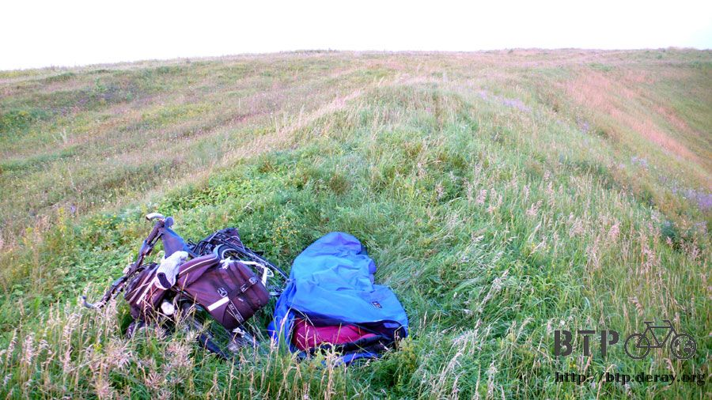
看著露營的裝備，昨天怎麼會這麼傻，走了這麼遠的草原到這裡只為了睡一覺，這邊可是連路都沒有呀。
不想在濕濕的草原和蚊子軍團肆虐的情況下收拾露營的設備，在這邊多待一分鐘對於蚊子的恐懼就越來越強。
兩手抱起睡墊、睡袋、帳篷，往路邊走去，找個蚊子比較少的地方，還有乾硬的路面才好收拾這些裝備。
還得再走一趟回草原，換牽小多和拿包包，這時候太陽才爬上山頭，今天又比你早起，希望不會又比你晚睡。
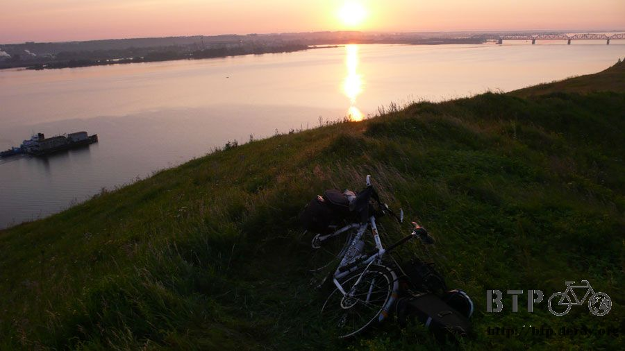
牽著小多離開草原，長長的草老是勾住轉動的踏板，看來這片草原很不想讓我離開，如果沒有這些蚊子的話，我也想停留久一點。
回到水泥地之後，總算把所有的裝備都搬過來了，看著這邊的情況，昨天要是睡在這裡就好了。
地上那麼乾淨而且又平整，蚊子數量也少很多，晨間更不會有霧氣，但相對的也就無趣許多。
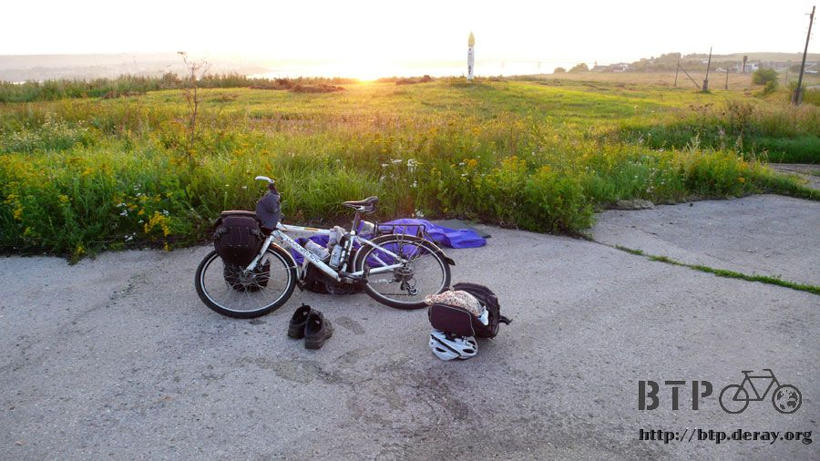
昨天睡前連身體都沒擦，汗乾了之後黏黏的非常不舒服，身上也長了一些小紅斑，需要洗澡來治療。
用水壺裡的水倒在毛巾上，簡單的把臉跟身體擦一擦，水真是非常重要的東西，滴滴都彌足珍貴。
拆了一條櫻桃蛋糕當早餐，邊吃邊收拾裝備，腰包裡的筆記本已經寫到最後一頁了，正好是七月三十一日。
拿出一本新的替換，從八月一日開始記錄旅行，這些簡單的文字就是遊記的雛形，少了它要回顧一整天發生什麼事情，都會有時間上的斷層感。

看來等等又要找地方曬睡袋了，七點半離開這裡，前方和昨天一樣是有點偏僻的路，趕緊出現城鎮吧。
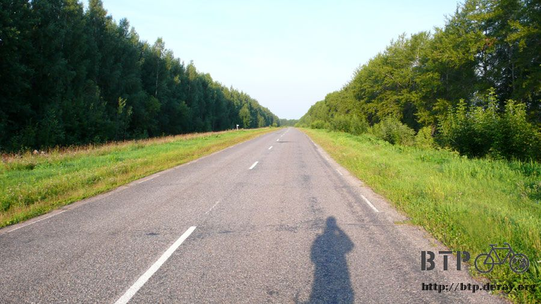
騎了好一段山路之後終於接回大馬路，出現大馬路之後也很快地就出現了城鎮，餐廳的招牌看了真令人陶醉。
門口掛著牌子，看不懂字但猜想是還沒營業，正在準備當中，低頭繞過牌子往裡面走，只想問有沒有廁所可以讓我洗把臉，就被餐廳的阿姨給轟了出來。
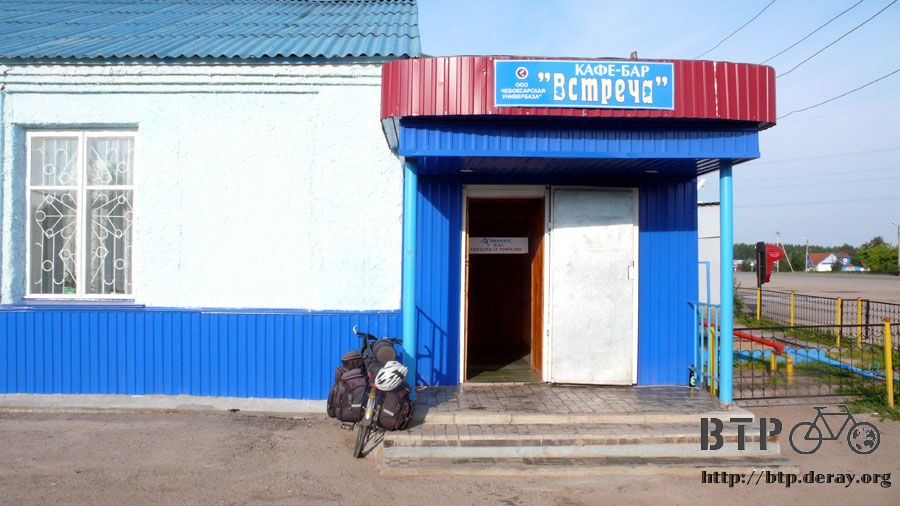
一早盥洗的夢想就這麼宣告破滅，繼續保持髒兮兮的狀態，等待下一個餐廳的出現。
這個時間有營業的只有一間小商店，買了一盒鳳梨汁和一袋乾硬的甜麵包，這種一公升的果汁就屬這一次買的最便宜，不到三十塊就入手了。
拿出一千元的紙鈔還是找不開，翻出腰包裡所有的零錢，紙鈔只剩一張十元，其它的硬幣湊一湊還是把帳給結清了。
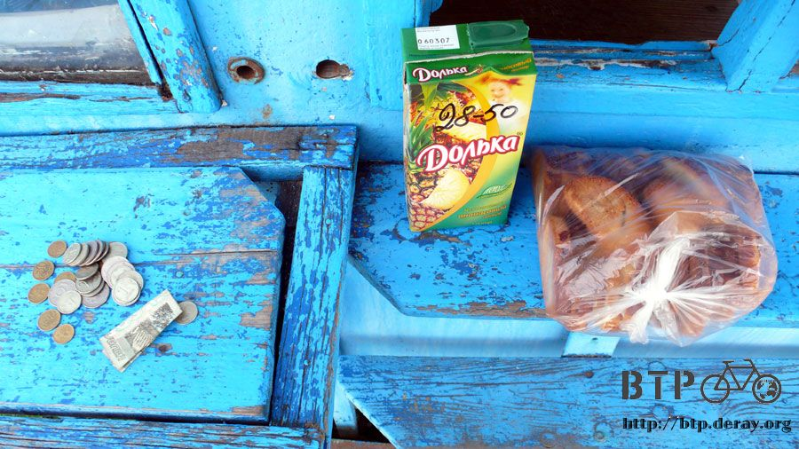
將鳳梨汁裝在水壺裡沿路可以慢慢喝，剩下三百CC配上硬麵包就是早餐，一早也來光顧商店的老伯伯看著我蹲在地上啃麵包，
靠過來關心一下這個年輕人既然這麼早起，看起來應該要有精神一點，不應該像流浪漢一樣蹲在地上那麼落魄。
他從袋子裡拿出幾個青蘋果送給我，突如其來的禮物讓我有點反應不過來，接過蘋果之後，才意識到現在應該說謝謝。
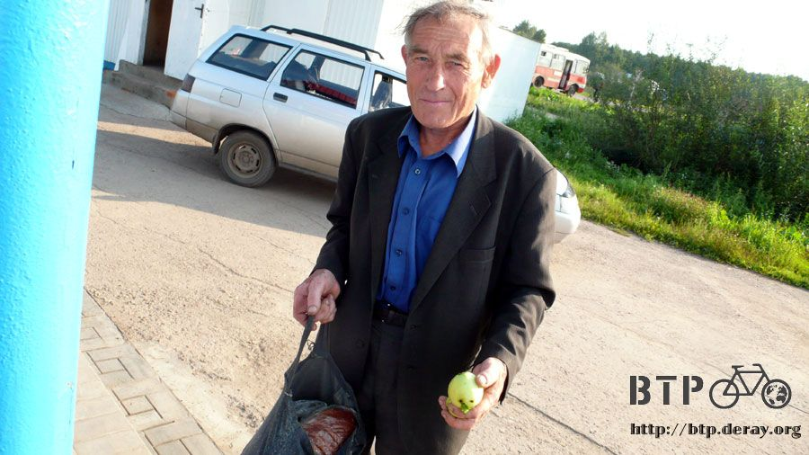
青蘋果一共拿了五顆，大小不一，表面統一都有毛毛蟲或是鳥類吃過的痕跡，老伯伯沒交代要洗過才能吃，所以應該是可以直接吃。
啃了一口之後發現味道還不錯，香甜中帶著微酸，也沒有發現果肉中有半隻毛毛蟲，可以安心地吃。
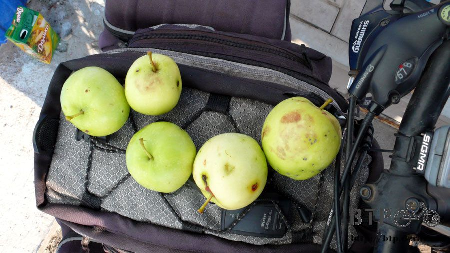
我又試著進去餐廳裡面，這次還帶著毛巾進去，想說這樣比較容易表達我的意圖，結果差點沒被掃地的阿姨用掃把給打出來。
既然餐廳不歡迎我這麼早來，那就繼續往下走吧，啃著蘋果上路～
路邊看到兩隻山羊自在地散步著，比較常見的都是綿羊，這種長著犄角、留著山羊鬍的反而少見，也比較不怕人。
蘋果雖然沒有蟲，可是有些地方稍微爛掉，將剩下的果肉在山羊面前晃來晃去引誘牠們過來吃。
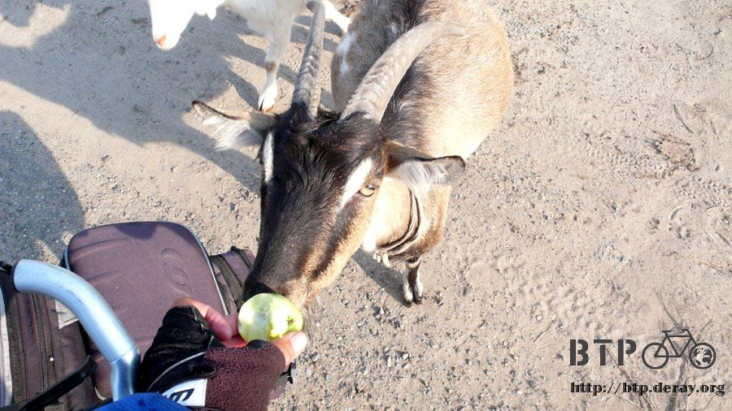
結果真的咩咩叫地靠了上來，嗅著手中的蘋果，一口就咬走，在嘴裡喀哩喀哩地咬成碎片，好利的牙齒，還好沒連我的手也一起吃掉。
有山羊陪著吃早餐還不錯，停在路邊吃蘋果，吃剩的就分給山羊吃，老伯伯五顆好心的蘋果餵飽了一個人和兩隻山羊唷～
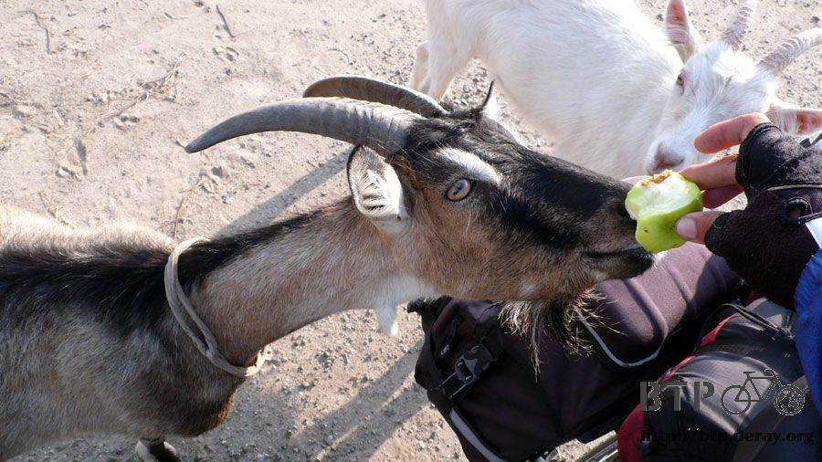
十點半的時候二度遇見餐廳，這次是二十四小時營業的那種，也沒有兇巴巴的阿姨。
點餐區有點半自助，可以看到有賣些什麼，指著櫃子裡的排骨和餐桌上客人吃剩的馬鈴薯泥，配上熱奶茶和麵包，早午餐一起解決。
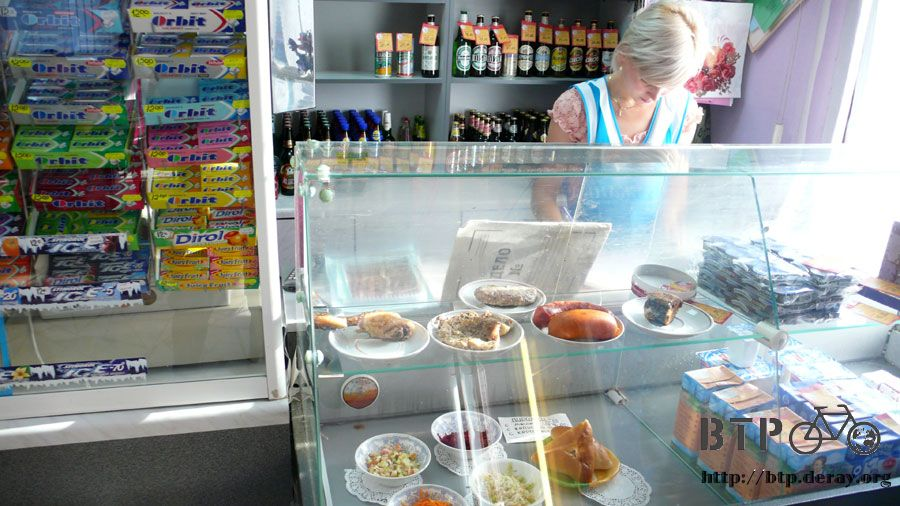
這間餐廳出現的時機太完美了，吃飽後就接著在店裡寫遊記，這段時間生活作息有點改變，以前都是睡前在旅館寫遊記，
現在旅館住得少，所以轉變成隔天才找餐廳寫昨天的遊記，這樣有好處也有壞處啦，最明顯的感受就是白天可以騎車的時間變少了。
遊記寫完之後心裡的擔子就放下許多，還好我習慣『即時連載』這樣的旅行模式，不然每天要邊騎車邊記錄，說實話不是一件輕鬆愉快的事情。

寫遊記的時候睡袋就攤開在店門口的欄杆處曝曬，下午一點多離開餐廳，外頭有一個媽媽曬了一堆的衣服，該不會她天天都在露營吧？
仔細想一下，這應該是在販賣衣服，前面是她的小孩，拿著水桶在賣小蘋果，賣衣服的生意不怎麼好，我的睡袋也沒有被賣掉。
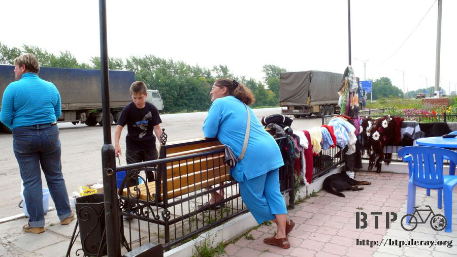
此時的太陽已經快要升到頭頂，距離莫斯科已經不算太遠了，加油吧～
接下來的路都是山坡的地形，重覆著一直出現，好像爬完一座山坡之後，倒帶再重爬一次，再度爬完、再度倒帶。
沿途修路的情形不少，好心的工人都會幫我做交通管制，直到平安通過這段單行道，才開放車子通行。

下午三點多的時候頭有點昏沉，同時因為昨天睡得不好而輕微感冒，
在中國旅行的時候加油站是我的好朋友，在俄羅斯則換成公車站是我的好麻吉。
身體不舒服就乖乖地休息，脫下鞋襪、手套、頭巾這些束縛品，坐在長椅上吃昨天買的白巧克力，經歷過高溫融解和低溫凝固之後就變成這副模樣。
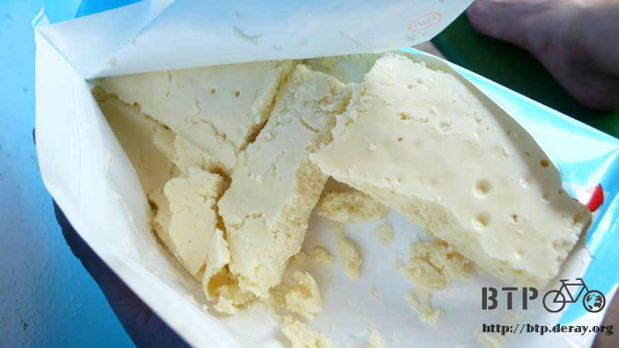
天氣漸漸有夏天的感覺，前幾天冷得不像話的雨霧天就像在作夢一樣不真實，俄羅斯緯度雖然高，夏天還是會熱的，而蒼蠅又再度出現了。
吃完零食後拿著睡袋當做枕頭，躺在長椅上睡午覺，要不是煩人的蒼蠅在那邊擾亂，可以睡得更安穩一些。
睡覺的時候看見一些妙齡女子在路邊攔車，獨自一個女生攔下的居然是大卡車，而且毫不猶豫地就搭上車。
在搭便車文化風行的國家，治安程度應該不致於壞到哪裡去吧？
這表示人跟人之間是可以信任的，一個手勢就能讓陌生人同行，毫無顧忌。
台灣搭便車的情形就很少見，要出現辣妹搭上砂石車這樣的畫面大概只有電視劇或是犯罪現場的監視錄影帶才看得到。
小睡一下之後感覺頭沒那麼昏沉，戴上口罩擋太陽繼續向西邊前進。
三個小時之後進入城鎮，昨天到手機店裡免費使用網路的服務令人雀躍不已，在路邊看到一間小小的鐵皮屋通訊行，再度去碰運氣。
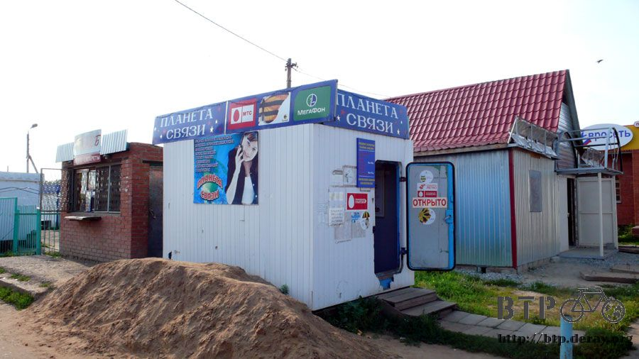
這麼小的店面，居然真的也有網路可以用呢～而且又是免費，看來俄羅斯的網路普遍程度比哈薩克好上很多，只是能不能找得到的問題。
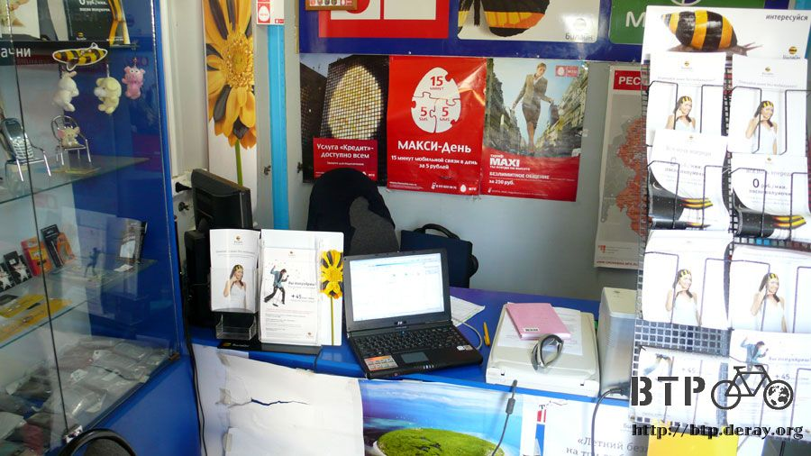
離城之前買了兩個牛奶冰淇淋當消暑的點心，流動攤販的冰箱裡賣的都是冰品，價錢也很低廉，交出二十元還可以找回九塊錢。
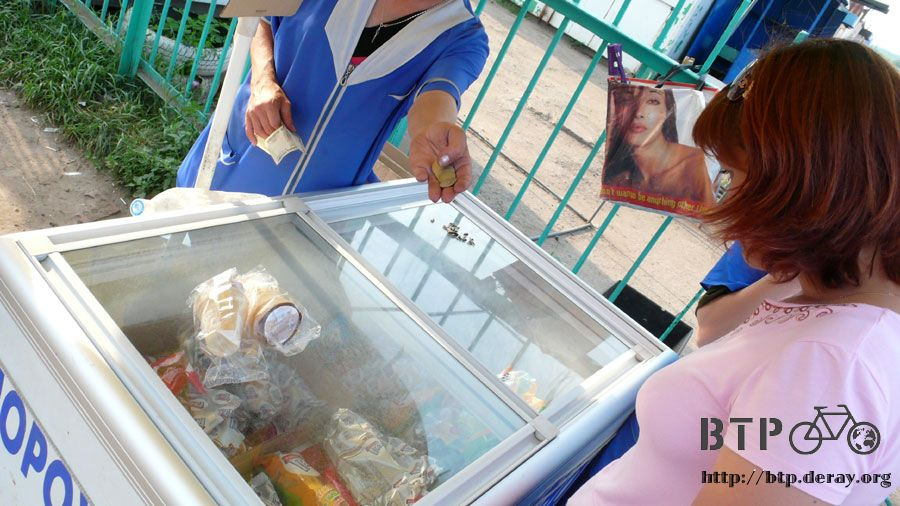
晚上九點的時候有點覺得累了，這陣子騎車速度都很慢，因為都是上坡加逆風，每天平均下來一小時只能騎十三公里。
常常騎了大半天的車之後看了碼表才增加一點距離，騎得慢只好用多一些時間來換取距離，每天希望可以至少騎一百公里。
眼前出現旅館的招牌就去問了價錢，差不多該到住旅館休養一晚上的時候了。
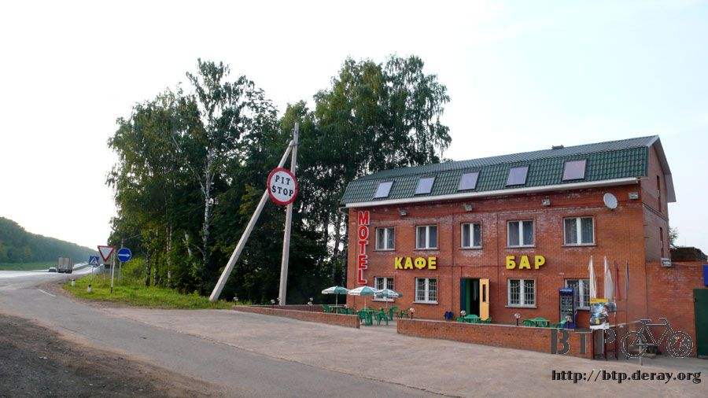
可惜這邊一晚上要六百元，超出自己訂的五百元預算，在這裡洗把臉，這可能是今天最後一次用清水洗滌，得好好把握。
買一盒果汁補給水分，這陣子都在喝果汁，還以為已經喝光了所有果汁的種類，居然還是漏了這個葡萄汁。
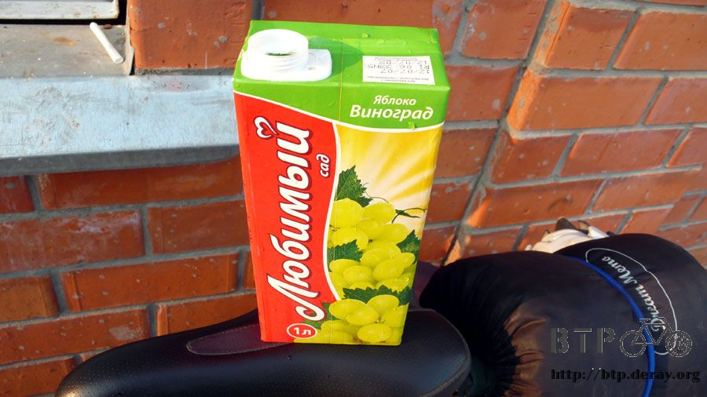
看著旅館卻選擇不住需要相當程度的毅力，同時要取決於當時的情況。
現在真的很想洗個舒服的澡，把身上髒到不行的衣服也徹底洗乾淨，若是離開這邊繼續往下騎，前途未卜，真的是在跟命運玩遊戲。
騎了一小段路，二度出現旅館的招牌，看起來不比剛才那間遜色，價錢不知道能不能讓我點頭住下？
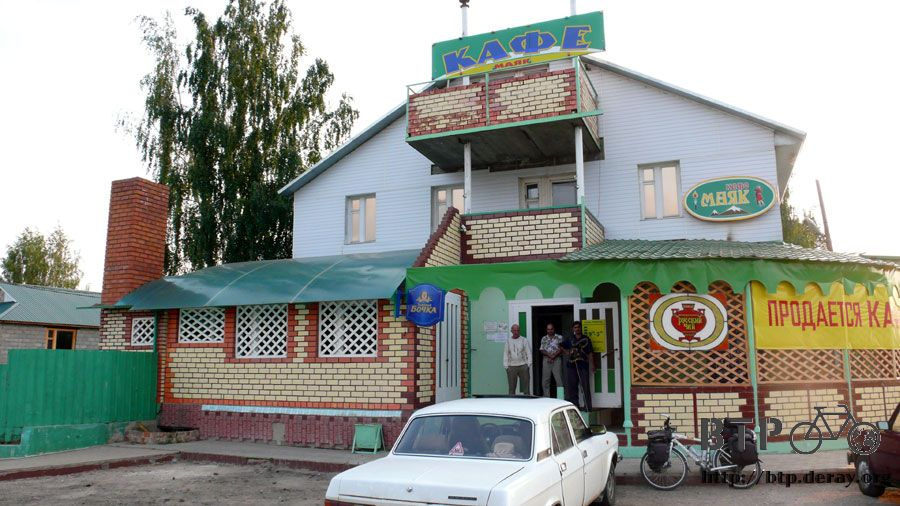
女店員在計算機按下三百五十元的時候，整個人跳起來大喊一聲『YES～！』，終於找到便宜的住所。
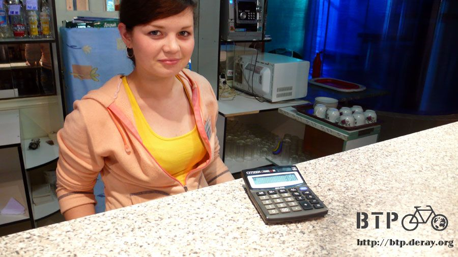
房間很舒適，剛才旅館照片門口那個白衣服的大叔就是老闆，房價是他決定的，不知道這間雙人房本來定價多少，便宜讓我住在這裡。
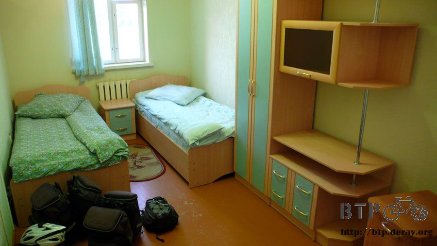
卸下行李之後馬上拿毛巾要去洗澡，這邊有浴室也有蓮蓬頭，但是只有冰水。
閉氣咬牙忍耐著淋濕全身，雞皮疙瘩掉滿地，不停地喊著好冷～好冷～，雖然很冰但感覺很爽，連續露營之後可以洗澡實在是大享受。
這情況很像一句名言『嘴巴說不要，身體倒是很誠實。』
身上的小紅斑不是太嚴重，塗點小護士沒兩天應該就可以好，還有一大段路要騎，得好好照顧自己才行。
洗完澡之後換洗衣服，昨天跟汗濕的衣服睡在一起，睡覺時一翻側身，臉就埋在汗酸味的長褲中。
不能洗衣服的時候，睡前我都將這些髒衣服晾在小多身上，吹風一夜之後就當它乾淨了。
露營的關係，晾在外頭的衣服整夜不是沾濕霧氣就是被蚊蟲爬來爬去，每天早上穿這些衣服之前，用力一抖都會掉落蟋蟀、蜘蛛這些昆蟲。
即使用餐廳的水稍微擦洗過身體，接下來還是要穿髒的衣服，洗澡好像都是在洗心酸的。
心中早就下了決定，只要下次可以洗衣服的時候，我一定會好好的盡心洗乾淨，不會嫌麻煩而隨便過個水了事。
這些髒兮兮的衣服經過洗滌之後已經乾淨很多，拿出童軍繩晾在旅館陽台，這樣比晾在房間裡還乾得快些。
洗好的衣服濕答答地滴著水，衣服的重量將繩子壓得下垂，看起來像是滿意的微笑，衣服也變乾淨了～
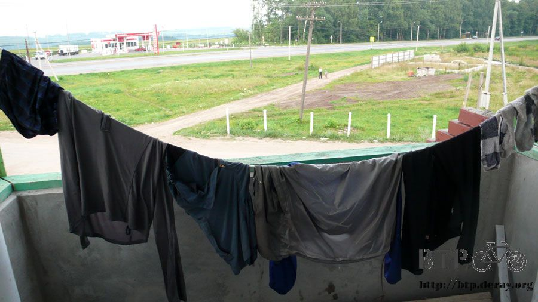
晚餐直接到樓下餐廳報到，點了沙拉、烤牛肉、烤肉捲，餐廳的老闆和幾個朋友也在吃飯，
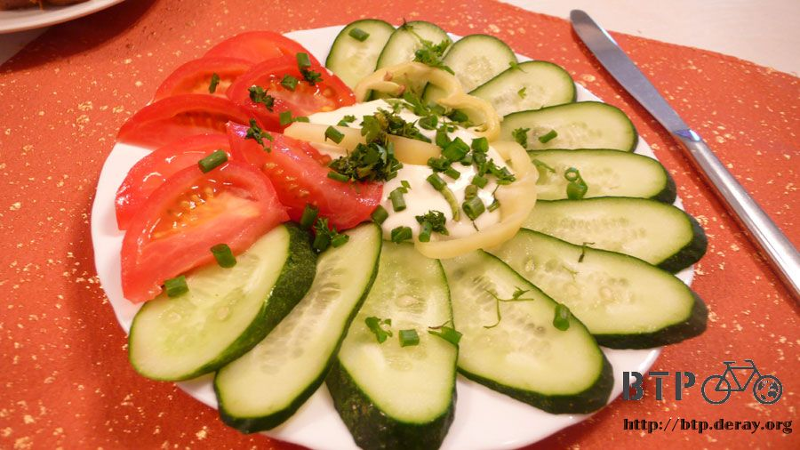
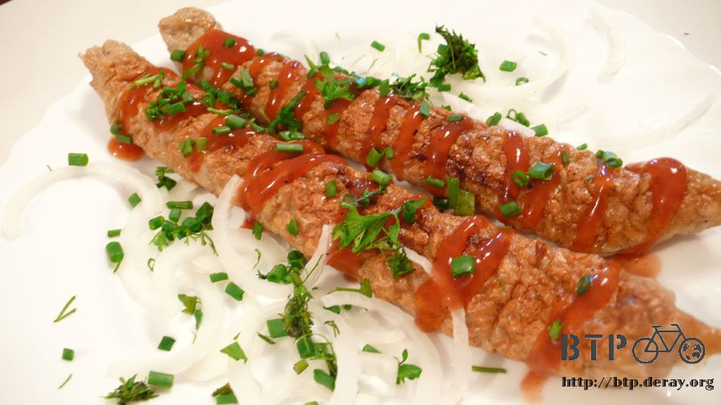

這頓飯就和大家一起吃，老闆正表情扭曲，奮力地轉開一瓶威士忌，跟大家小酌了兩杯。
俄羅斯人相當熱情，我想每個國家都會有好人跟壞人，但是大家對於俄羅斯的誤解和偏見已經負面得不太合理。
這一路上不論是長髮、短髮、平頭、禿頭，大家都很友善地對待我，種族歧視沒發生在我身上，壞警察也不曾遇到。
雖然提防一點比較安全，但是想著自己以偏差的觀念先入為主，在俄羅斯旅行的時候心防很重，
實在沒這個必要，回想著自己這一路上的應對還可以更親切一些。
過度提防別人，彷彿是在自己心裡築上一道牆，只怕什麼人都沒防到，卻把自己給關在狹隘的偏差世界裡，很不值得這麼做唷～
繼續閱讀：8.2 能躺下的地方就是床
俄羅斯-盧布－ 1：1.3 台幣
8.1 |
總計：734.5元 |
好不容易出現的小鎮商店鳳梨汁、烤餅乾46.5元、午餐烤肉配馬鈴薯泥、麵包、奶茶118元、果汁水14元、冰淇淋兩個11元、葡萄汁40元、旅館350元、晚餐小黃瓜番茄沙拉、烤肉、麵包、咖啡155元 |
|